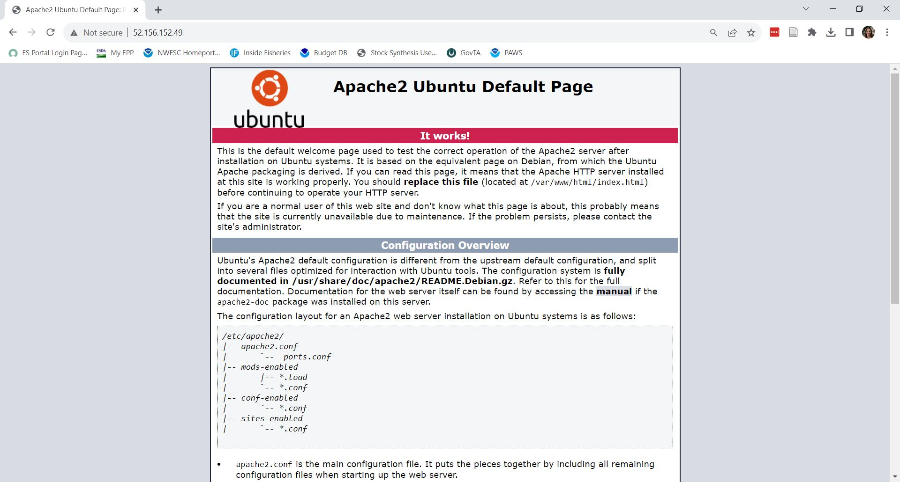

6 Cloud computing: jittering a stock assessment
This is the path that I (Kiva) figured out and it worked for me. I am not an expert on computers, cloud computing, or computer security, so if you find yourself thinking “huh, why is she recommending that and not this,” there is probably not a very good reason! In other words, please let me know if you think this could be improved.
6.1 Pick a VM
- You’ll need an NMFS Azure account. Contact Christine Stawitz to get one.
- Log in.
- Click on Virtual machines -> Create. I think the preset configurations are helpful.
- I’ve been using the D-series
- Give it a name. Other settings I changed from defaults:
- Size. Decide how many CPUs (cores) you want. This sets how many stock assessments can be run concurrently.
- Under networking, add HTTP (80) and HTTPS (443) to the inbound ports. Ignore the warning.
- Once you get to the end of all of the options, mostly sticking to defaults, click “Create.”
- You’ll need to create a new SSH key for your VM. Once again, just click on the default buttons to keep things advancing, letting the many settings you don’t entirely understand wash over you. (You probably created an SSH key at some point for github.)
You’re done! It will take a few moments to get going. If after trying it out you don’t like it, no worries! Most of these settings can be changed on the fly!
I started out with an 8 core VM. This was twice as many as my laptop, so the gains were not huge. For production purposes, I would probably opt for 16 cores.
6.2 Connect to your VM
There are several ways to do this. This is what I do:
Go to the Azure home portal. Under “Resources” your VM should be there. Click on it. If the “Start” button is blue, click on it. This is sort of like turning on your computer. Creating a new VM will automatically turn it on.
Click on “Connect.” I use the Native SSH. Copy your SSH key’s file name to step 3 of the Native SSH directions. It is probably something like [VM name]_key.pem. It will give you the SSH command to run; copy it.
Open up Powershell, Git Bash, or similar. Change the directory (using cd) to wherever you stored your SSH key. If your computer asks if you are sure you want to do this, you bet you are sure.
6.3 Install software
First, install some software you will need for cloud computing by running the following lines in the command line:
sudo apt-get update
sudo apt-get upgrade
sudo apt-get install libxml2 libxml2-dev # igraph
sudo apt-get install libcairo2-dev # Graphics packages
sudo apt-get install libssl-dev libcurl4-openssl-dev #httr
sudo apt-get install apache2To make sure everything is working, in your browser window, navigate to your VM’s IP address, which you can find in the Azure portal of your browser. You should see:

Now install R:
# update indices
sudo apt update -qq
# install two helper packages we need
sudo apt install --no-install-recommends software-properties-common dirmngr
# add the signing key (by Michael Rutter) for these repos
# To verify key, run gpg --show-keys /etc/apt/trusted.gpg.d/cran_ubuntu_key.asc
# Fingerprint: E298A3A825C0D65DFD57CBB651716619E084DAB9
wget -qO- https://cloud.r-project.org/bin/linux/ubuntu/marutter_pubkey.asc | sudo tee -a /etc/apt/trusted.gpg.d/cran_ubuntu_key.asc
# add the R 4.0 repo from CRAN -- adjust 'focal' to 'groovy' or 'bionic' as needed
sudo add-apt-repository "deb https://cloud.r-project.org/bin/linux/ubuntu $(lsb_release -cs)-cran40/"
# install R
sudo apt install --no-install-recommends r-baseThis installed the latest R version as of 10/30/23 (I ended up with 4.3.1). For up-to-date instructions, go to the R project website.
Install Rstudio Server:
To download the latest version of Rstudio Server, follow the directions here. If you followed the earlier specifications to set up the VM, you should select the operating system “Debian / Ubuntu.” The Ubuntu version that is installed shows up when you first SSH into the VM. For me, it was 20. You’ve already installed R, so scroll down to step 3. It will direct you to run
sudo apt-get install gdebi-coreAnd then a couple more lines specific to the version.
Christine Stawitz says “If you don’t like RStudio as an IDE, there are other options like Code Server (cloud version of VSCode) or Jupyter notebooks.”
6.4 Connect to Rstudio
In the Azure portal where you can see the VM settings, in the left bar under “Networking” select “Network settings.” Add an inbound port rule. The destination port rule should be 8787 (the default for Rstudio). Keep everything else as a default. As a test, on your browser, navigate to [VM IP address]:8787. You should see an Rstudio login.
I’m not sure what the correct login is, so let’s change it. From your VM’s Azure portal in your browser, under “Help,” click on “Reset password.” Click the “reset password” bubble. Pick a username and password.
Now return to that Rstudio login on your browser. Refresh, and enter your username and password you just chose. It should look just like a normal Rstudio window!
Ian: I was actually following the directions here, and then they got really long and I had something working so I stopped. Christine, independently, said she stopped at the same spot. IT may not like accessing it from the public IP address, but she said she is going to do it this way until she gets in trouble.
6.4.1 A note on Rstudio
Rstudio cannot parallel process using a “multicore” strategy, only “multisession.” The makes no difference on your Windows laptop, because Windows also does not support multicore parallel processing. However, if you have set up a Linux VM, it is theoretically an option. I do not know if it is faster or how much.
6.5 Install packages
Things should be looking more familiar! From the Rstudio (or your favorite IDE) tab in your browser, run:
install.packages('remotes')
remotes::install_github('r4ss/r4ss')
# Plus any others you want, e.g., nwfscDiag, here, tidyverse, etc.6.6 Move files
There are several ways to do this. I am giving you directions for one approach, using Azcopy. To install Azcopy on your VM, run:
wget https://aka.ms/downloadazcopy-v10-linux
tar -xvf downloadazcopy-v10-linux
sudo cp ./azcopy_linux_amd64_*/azcopy /usr/bin/Now
- In the Azure portal of your browser, create a storage account. Title it whatever you want, maybe your name or the name of the assessment. Default settings should be fine.
- On the left column under “Data storage,” click on “Containers.” Make a new container. Pick a name. Again, default settings are fine.
- Navigate to your new container and on the top bar click on “Upload.” Upload whatever files you want to transfer.
- In the same container, click on “Shared access signature” under “Security + networking.” I gave it all 7 permissions. Give yourself a little flexibility on the start and expiry date/time. I usually just subtract one day from the start and add one day to the end. You can also enter your VM’s IP address if you want.
- Click “Generate SAS token and URL” and copy the text for the Blob SAS URL.
- Back in your VM terminal, run
sudo azcopy copy "[paste Blob SAS URL]" "." --recursiveThe general syntax is:
sudo azcopy copy "[copy from]" "[copy to]" --recursiveThe recursive addition is necessary if multiple files are involved. The files should be downloaded into a new folder with the same name as your container!
- By default, the directory you just created does not have sufficient file permissions to run stock synthesis. To change this type:
sudo chmod 777 [model_directory]If you were transferring a stock assessment model, try running stock synthesis (probably using -nohess) to make sure it is working. To ensure you have the right executable, you can run r4ss::get_ss_exe() from Rstudio (or whatever cloud IDE you are using), and it will automatically download the correct executable to your selected working directory.
6.6.1 Other file transfer methods that you might consider
You could install git and clone your repo. I did not look into that because repos can get large and take a while to clone. You can easily download model files straight from github without git using wget, but will eventually need to write the results somewhere.
Another approach is to use the scp command from your local computer and avoid the blob storage and azcopy. I think you would have to open up the appropriate port on your VM. Hem, who uses Azure to run Atlantis, recommended the azcopy approach, so that is what I tried. I have used scp in the past on university computing clusters, and it may be fewer steps for each file transfer. I have no idea whether we can run scp on our federal laptops.
6.7 Make sure you log off your VM!!!
Hit “Stop” on the main Azure panel for your VM in your browser. This is akin to shutting down your computer. In general, cloud computing is paid by the minute. The per minute cost is low, but you don’t want to keep it on, e.g., overnight, if you are not using it.
6.8 Some thoughts
The strongest use case for this in production stock assessments is running jitters. The first time, this requires more active time on your part than running a jitter on your local computer. However, you should get the jitter results faster once it starts running. I ran 8 jitters all at once and it took X min of processing time! Once you set up your VM, you can get back on it whenever you want and your files and settings will be retained, so it is just a matter of transferring files and hitting run.
Note that {r4ss} is newly set up so that you can run jitters and retrospectives in parallel on your laptop, too! Your laptop just has fewer cores, so you can run fewer models at once. Profiles are not currently set up to run in parallel because it is often useful for convergence purposes to run them sequentially and then use the previous par file as the starter.
The VM will not run a single stock synthesis model any faster than your laptop. The gains are really in the number of models that you can run simultaneously.
Another use case for this is if you want to rerun all of your sensitivities on a new (e.g., post-STAR) base model. You could do something like furrr::future_walk(dir_string, r4ss::run). For research (e.g., simulations, variable selection, cross validation), the use cases are endless!
I can fumble my way through file management from the command line, but I don’t love it. Normally we all probably think of Rstudio as an environment for writing and executing R code, but it does provide a nice graphical file manager that I have been making use of. You can also open and edit any text file, including all of the inputs and outputs for stock synthesis. (Other IDEs should provide this functionality, too.) Your Ubuntu VM does come with Vim.
Until June, 2024, my understanding is this is all free. After that, we may need to pay. Christine Stawitz thinks it will be possible to pay for the credits in advance when funds are available, and use the credits whenever we want. (Cloud computing in general definitely works that way. It is possible the federal bureacracy ruins it, like all nice things.)